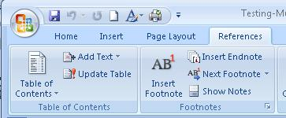

The intent of this technique is to make it possible for users to locate
content using bookmarks (outline entries in an Outline dictionary)
in long documents.
A person with cognitive disabilities may prefer a hierarchical outline
that provides an overview of the document rather than reading and traversing
through many pages. This is also a conventional means of navigating
a document that benefits all users.
Examples
Example 1: Converting a table of contents created with Microsoft
Word 2007 and creating bookmarks for Adobe Reader 9 and Acrobat 9 Pro
This example is shown with Microsoft Word and Adobe Acrobat Pro. There are other software
tools that perform similar functions. See the list of other software
tools in .
Create a table of contents at the beginning of the Word document.

Figure 1Reference tab on Word ribbon, showing Table of Contents tool.
Use Save as... > Adobe PDF to convert the Word document to
PDF, specifying both of the following:
Enable Accessibility and Reflow with Tagged Adobe PDF
Convert Word Headings into Bookmarks
The table-of-contents entries in the converted document will be linked
to the headings in the document.
In addition, the headings will appear as PDF Bookmarks in the left-hand
Navigation pane.
Figure 2PDF document showing the Table of Contents and Bookmarks created from the headings
in a Word document.
If the document provides a glossary and/or index, these sections
should have headings that appear in the table of contents (and thus
as bookmarks in the Navigation pane). The table of contents also
should be marked up with a heading so it is bookmarked as well.
If this markup has not been done in the authoring tool, Adobe Acrobat
Pro can be used to provide the tags. See if
you need to modify converted headings or add new ones.
Example 2: Converting a table of contents created with OpenOffice.org
Writer 2.2 and creating bookmarks for Adobe Reader 9 and Acrobat 9
Pro
This example is shown with OpenOffice.org Writer and Adobe Acrobat Pro and Reader.
There are other software tools that perform similar functions. See the list of other
software
tools in .
Create a table of contents at the beginning of the OpenOffice.org
Writer document:
Insert > Indexes and Tables... > Indexes and Tables > Insert
Index/Table
Use File > Export as PDF... to convert the document to PDF,
specifying Tagged PDF in the Options dialog.
Figure 3Image of the Insert Index/Table dialog in OpenOffice.org Writer.
The table-of-contents entries in the converted document will be linked
to the headings in the document, and will appear as PDF Bookmarks in
the left-hand Navigation pane. The OpenOffice.org Table of Contents
and Bookmarks look the same as they appeared in Example 1.
Example 3: Adding bookmarks using Adobe Acrobat 9 Pro after conversion
This example is shown with Adobe Acrobat Pro. There are other software tools that
perform similar functions. See the list of other software
tools in .
After conversion to tagged PDF, you may decide to add bookmarks that
were not automatically generated. Like the converted bookmarks, tagged
bookmarks use the underlying structural information in the document.
In the Bookmarks panel, choose the options menu, then choose New
Bookmarks From Structure...
From the Structure Elements dialog, select the elements you want
specified as tagged bookmarks.
The image below shows the Bookmarks options menu.
Figure 4The Bookmarks options menu.
The next image shows the selection of links in the document for bookmarking.
Figure 5The tagged elements that can be used for bookmarking, with 'links' selected.
The tagged bookmarks are nested under a new, untitled bookmark. Access
the context menu for the new bookmark and select the Rename option
to rename the new bookmark, as shown in the following image.
Figure 6The bookmarks for the hyperlink in the document.